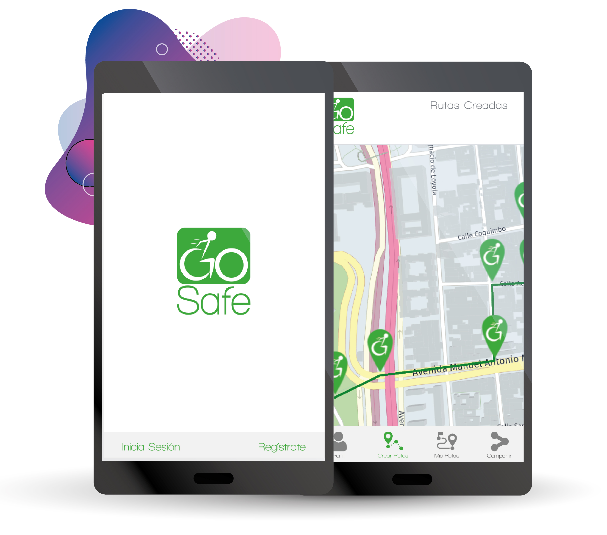
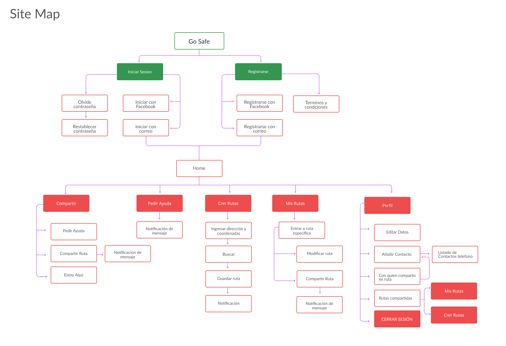
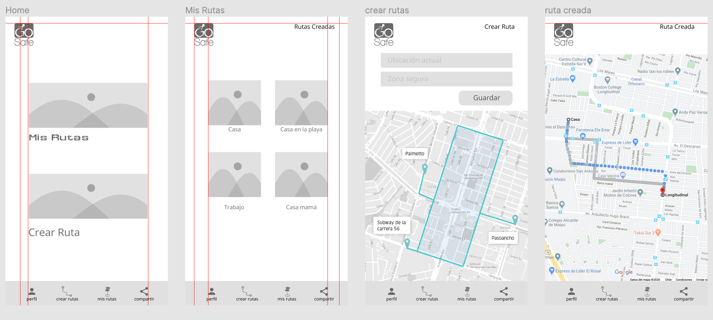
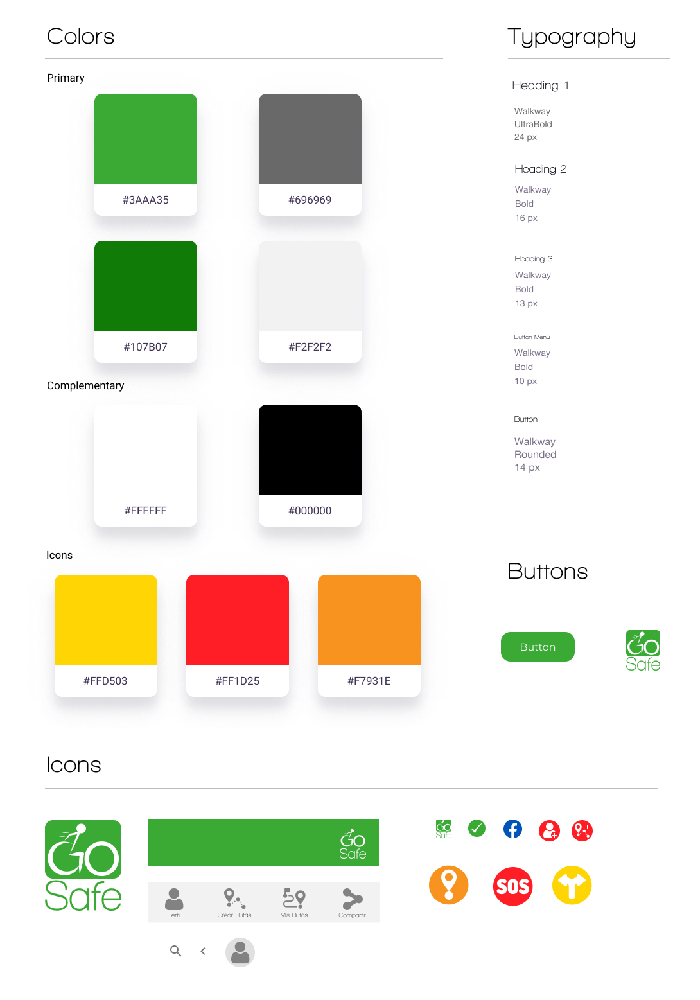

Site Map
Este sitemap muestra la estructura de la aplicación. Nos ayudó a hacer los wireframes y saber que contenido va en cada pantalla. Basándose siempre en la accesibilidad del usuario al momento de una emergencia.
HERE Technologies es una compañía multinacional con sede en Chile que desarrolla servicios de mapas y geolocalización como competencia a Google Maps. Provee APIs para su desarrollo y uso.
Junto con el área de front presentar propuestas de proyectos de desarrollo de software que resuelvan las necesidades de las personas con movilidad reducida en el contexto de la inclusión y movilidad en la ciudad.
Para generar una idea, estos son los insights que logramos identificar:
Conformado por 4 integrantes, 3 Front-end y yo como UX, con una duración de 3 semanas.
Mi rol


Se realizó un estudio de App con enfoque a movilidad reducida y otro de utilidad de mapas en la ciudad, como referencias. Se entrevistó usuarios con movilidad reducida de distintas zonas del país, con el objetivo de saber cuáles son los mayores obstáculos para la movilización y saber qué protocolos tienen estas personas en caso de emergencia o catástrofe. Además de una investigación a Senadis y Onemi para saber de protocolos a zonas seguras.
Utilizamos la metodología de design sprints, donde cada integrante genero scketch e ideas de cómo implementar una aplicación de solicitud de ayuda y generar rutas, se optó por las opciones más accesibles enfoacadas al usuario y posterior se generó un mapa de sitio, para facilitar la interfaz.
Dado que la aplicación era una ideación desde cero, se creó un logo y guía de estilo. Se creó wireframe para hacer testeos de usabilidad, posteriormente el prototipo fue creado en Figma con su diseño de interfaz. Los testeos se realizaron con maze a 5 personas con movilidad reducida, tendiendo bastante éxito en las tareas.
Este sitemap muestra la estructura de la aplicación. Nos ayudó a hacer los wireframes y saber que contenido va en cada pantalla. Basándose siempre en la accesibilidad del usuario al momento de una emergencia.

El wireframe fue creado en figma post sitemap y testeado para verificar la funcionalidad, comportamiento y jerarquía de contenidos. Una vez teniendo esos resultados llegamos a un prototipo más acabado con una guía de estilos. Esto nos ayudó mucho a saber cómo realizar la interfaz del usuario.

Se creó una guía de estilos desde cero, basando los colores en las zonas seguras indicados por la Onemi, y que su imagen fuera con enfoque para personas con movilidad reducida, botones grandes y simples. Con todos los elementos y componentes detallados para el acceso a las front-end.

Los testeos se realizaron con maze a personas con movilidad reducida, se les dio como tarea crear una ruta, pedir ayuda y buscar una ruta guardada, luego de eso se le hicieron varias preguntas para determinar si se entendía la aplicación, accesibilidad y usabilidad de la app, esta tuvo un 75%, pudiendo así iterar según la información recopilada.